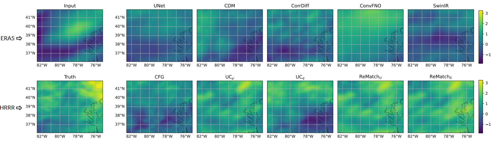
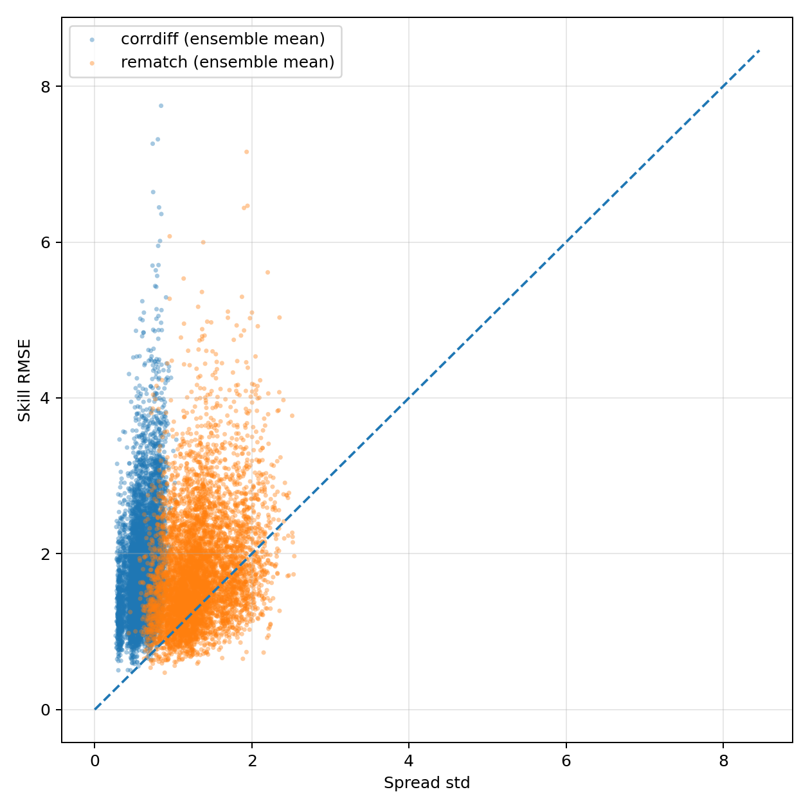
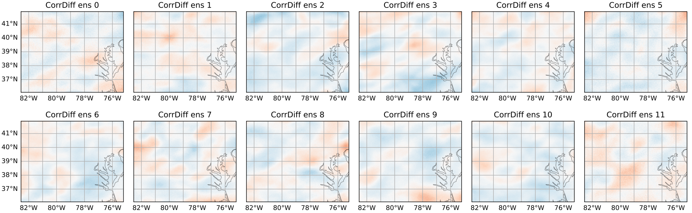
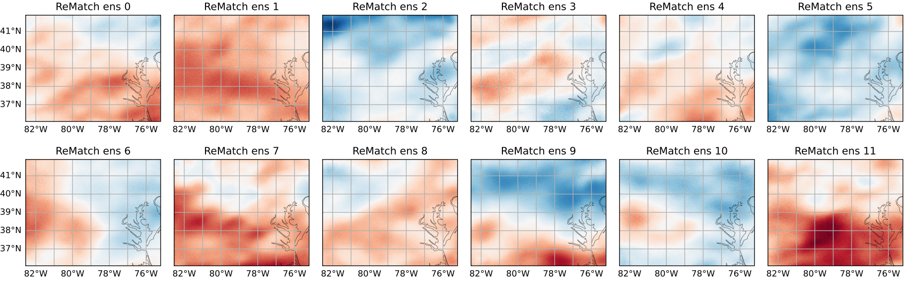
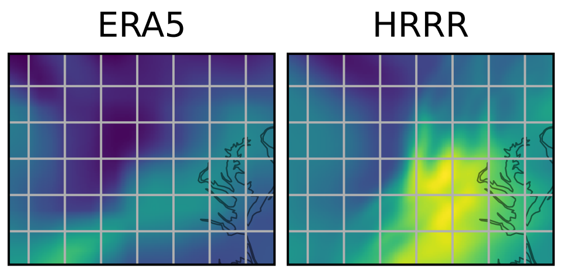
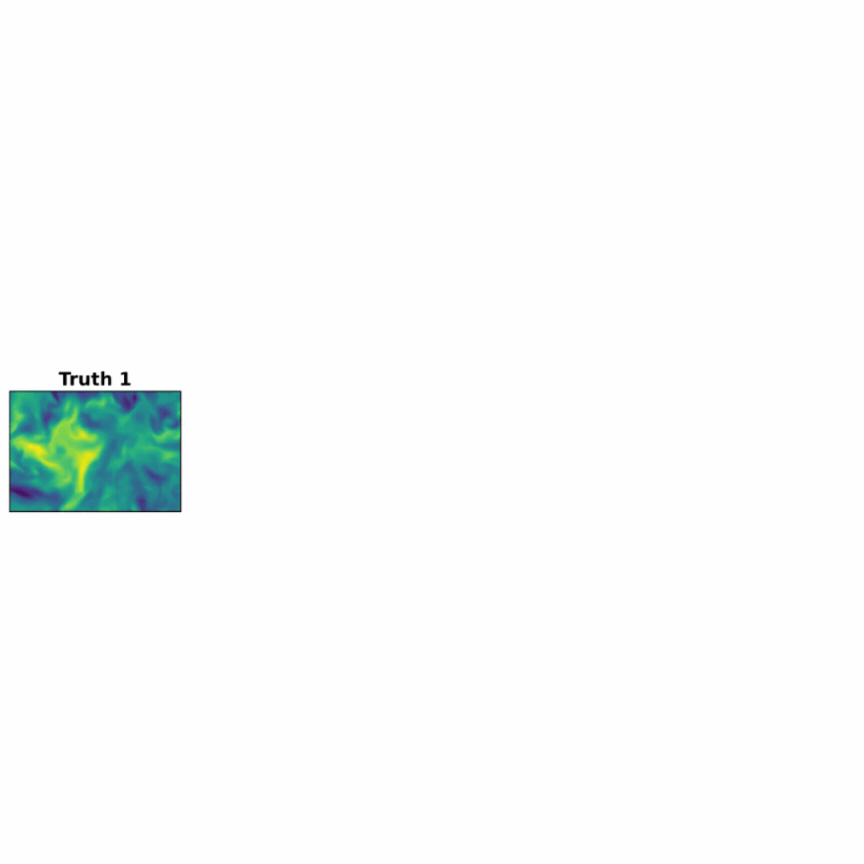
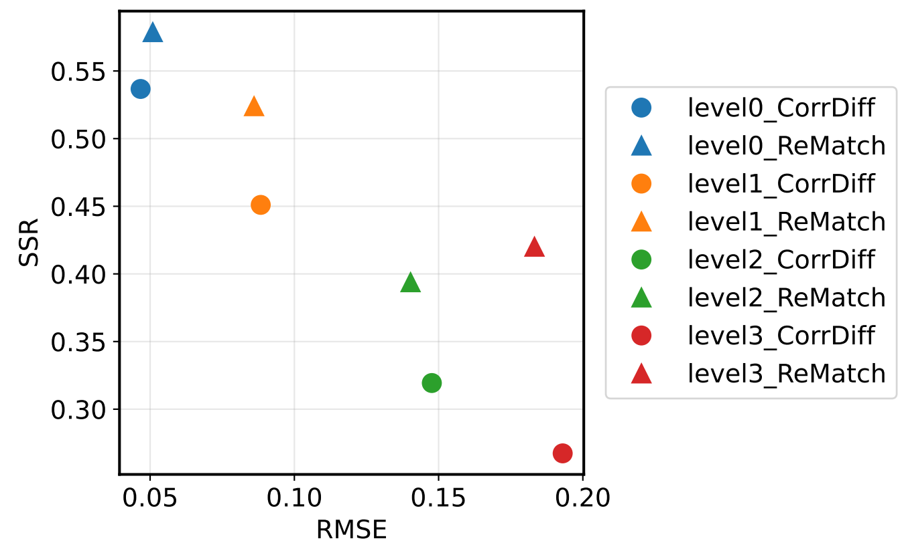
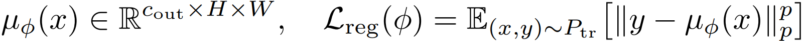
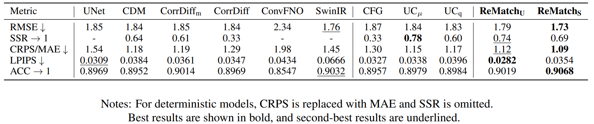
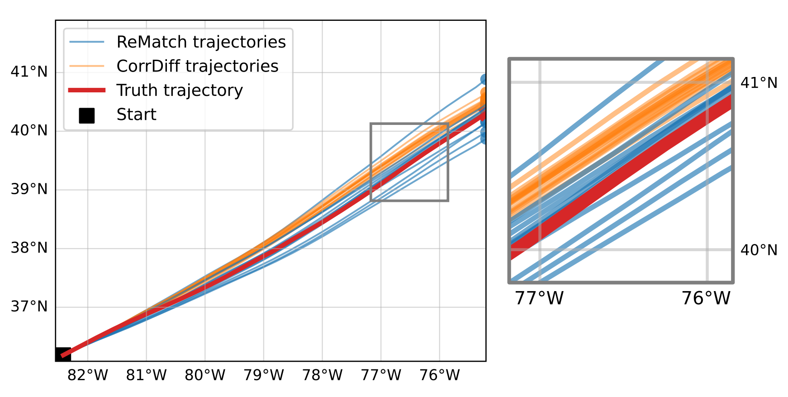

Probabilistic downscaling is the task of modeling the conditional distribution of high-resolution fields given coarse inputs, and is a central challenge to atmospheric science, climate modeling, and other multiscale physical systems. A widely used paradigm decomposes the problem into a deterministic mean predictor followed by a stochastic residual generator. While effective in idealized settings, this mean-residual approach frequently produces biased and under-dispersive ensembles in real-world applications. Is this merely generic predictive uncertainty miscalibration? We show that the root cause is more fundamental: residual target misspecification, the residual distribution induced during training differs systematically from the one required at test time due to downscaling bias. To close this gap, we introduce ReMatch (Residual Distribution Matching). ReMatch aligns the training residual distribution toward the test-time regime via optimal transport in a low-dimensional PCA space. This preserves the statistical benefits of the mean-residual framework while reducing the train-test mismatch in the residual targets seen by the stochastic generator. On a controlled synthetic benchmark with varying bias levels and a real-world HRRR-ERA5 wind field downscaling task, ReMatch substantially reduces under-dispersion, improves calibration (SSR and CRPS), and outperforms strong baselines, including the standard mean-residual model and its variants, as well as state-of-the-art super-resolution models.
In the mean–residual pipeline, the residual is not an intrinsic stochastic component of the high-resolution field. Rather, it is an induced correction target defined relative to the upstream mean predictor. This could include a mean-error magnitude gap, spatial structure, extreme behavior, etc. Generally, when the low- and high-resolution fields exhibit significant downscaling bias (as is typical in real-world cross-source or cross-resolution settings), the mean predictor overfits training-specific biases, which causes the residual distribution observed during training to become systematically different from the correction distribution required at test time. The severity increases directly with the strength of low-resolution (LR) – high-resolution (HR) bias.
An example of realistic LR-HR mismatch is the gap between our upsampled ERA5 data and ground truth HRRR data. With the same atmospheric scene, the LR input and the corresponding HR target are substantially different.

We conduct a toy experiment with synthetic flow data to demonstrate this phenomenon. We compare ReMatch with another SoTA mean-residual architecture, CorrDiff.


First, we create training, calibration, and test splits. ReMatch is trained on a calibration set with a frozen mean predictor that acts as a proxy test set. For our experiments, we used three stages:
Stage 1: We train an upstream mean predictor using the pointwise regression objective to create a deterministic approximation of the target field. This creates residuals for each sample.

Stage 2: We use optimal transport to align the training residual distribution with the test-time residual distribution. We compute the transport cost by fitting separate PCA bases to the concatenated training and calibration residuals, and to the corresponding low-resolution inputs. We use the cost to reconstruct the transported residual with the transport weight from training sample to calibration sample and the calibration residual PCA representations.
Stage 3: We train a conditional residual model on both the train and calibration set, conditioned on the union of the transported training samples and the original calibration samples. This allows the stochastic residual generator to be trained on residual targets whose distribution is more closely matched to those encountered at inference.
We note that ReMatch is a generalizable, modular framework. It can be used with any mean predictors \(- \) such as UNet or SwinIR in our experiments \(- \) or any stochastic residual generators.
Our results suggest that in residual generative pipelines, calibration failures should not be viewed only as deficiencies of the stochastic sampler; they can originate from the target construction itself.

